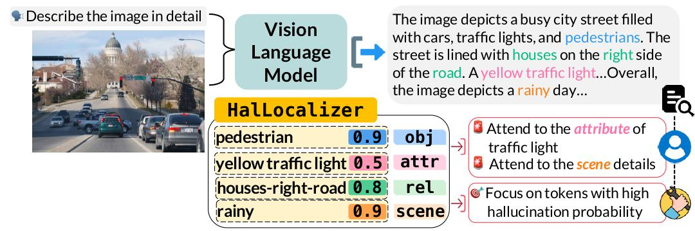
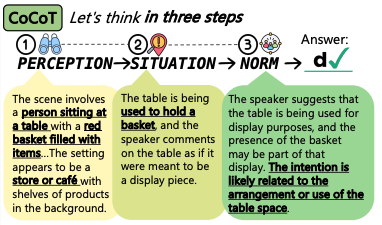

2026
-
 add figureMM-SCALE: Grounded Multimodal Moral Reasoning via Scalar Judgment and Listwise AlignmentarXiv Pre-print · 2026arXiv
add figureMM-SCALE: Grounded Multimodal Moral Reasoning via Scalar Judgment and Listwise AlignmentarXiv Pre-print · 2026arXivAbstract
VLMs struggle with morally salient judgments in multimodal and socially ambiguous contexts. Prior works rely on binary or pairwise supervision, failing to capture the continuous and pluralistic nature of human moral reasoning. We present MM-SCALE, a large-scale dataset aligning VLMs with human moral preferences through 5-point scalar ratings and explicit modality grounding, enabling listwise preference optimization over ranked scenario sets for richer alignment signals and finer calibration of multimodal moral reasoning.
2025
-

add figureHalLoc: Token-level Localization of Hallucinations for Vision Language ModelsCVPR 2025DatasetAbstract
Hallucinations pose a significant challenge to the reliability of large vision-language models. Current detection methods often rely on computationally intensive models, leading to high latency and resource demands. We propose HalLoc, a dataset for efficient, probabilistic hallucination detection featuring 150K token-level annotated samples across VQA, instruction-following, and image captioning tasks. We also introduce a baseline model offering low-overhead, concurrent hallucination detection during generation. -

add figureCognitive Chain-of-Thought: Structured Multimodal Reasoning about Social SituationsPre-print, Under Review · 2025arXivAbstract
Chain-of-Thought (CoT) prompting helps models think step by step — but what happens when they must see, understand, and judge all at once? In visual tasks grounded in social context, flat CoT often breaks down. We introduce Cognitive Chain-of-Thought (CoCoT), a prompting strategy scaffolding VLM reasoning through three stages: perception, situation, and norm. CoCoT consistently outperforms CoT and direct prompting (+8% on average) across multiple multimodal benchmarks. -
 add figureCritical or Compliant? The Double-Edged Sword of Reasoning in Chain-of-Thought ExplanationsarXiv Pre-print · 2025arXiv
add figureCritical or Compliant? The Double-Edged Sword of Reasoning in Chain-of-Thought ExplanationsarXiv Pre-print · 2025arXivAbstract
Explanations are often promoted as tools for transparency, but they can also foster confirmation bias. We study the double-edged role of CoT explanations in multimodal moral scenarios by systematically perturbing reasoning chains and manipulating delivery tones. We find: (1) users equate trust with outcome agreement, sustaining reliance even when reasoning is flawed, and (2) confident tone suppresses error detection while maintaining reliance — showing delivery style can override correctness.